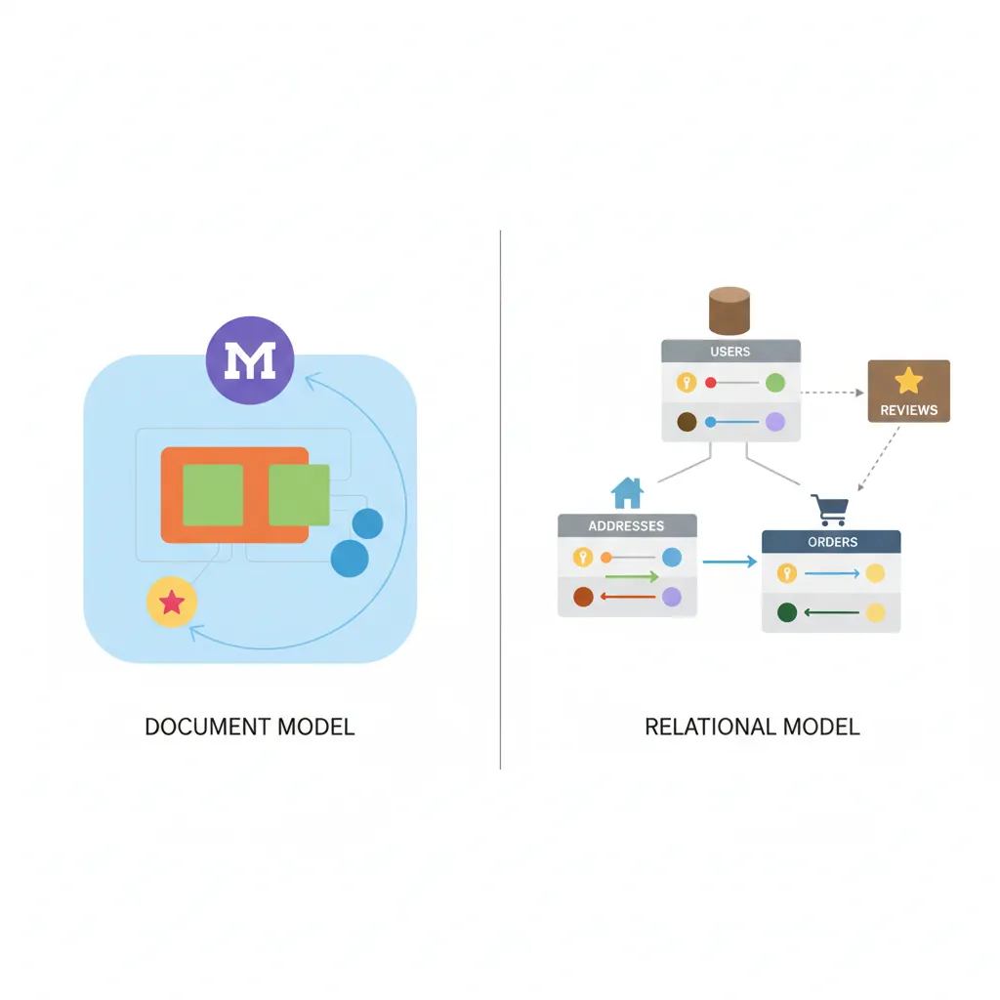
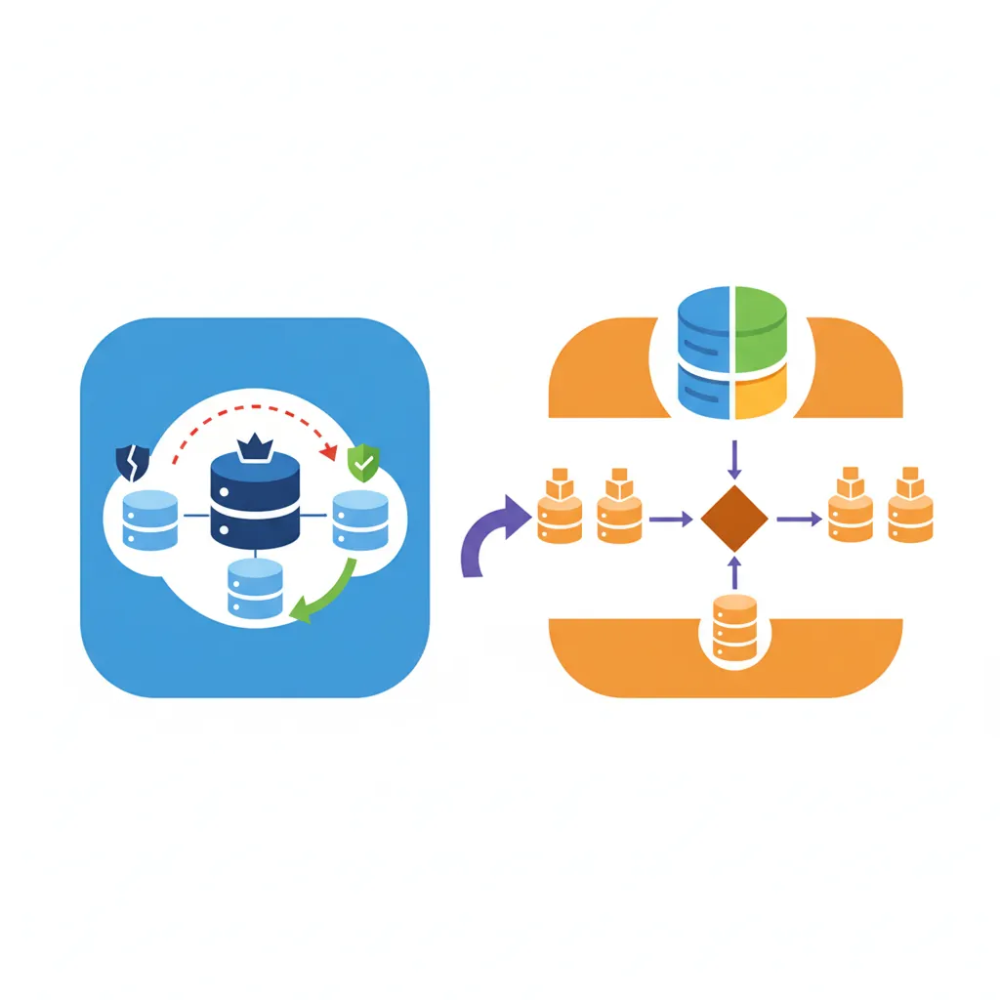
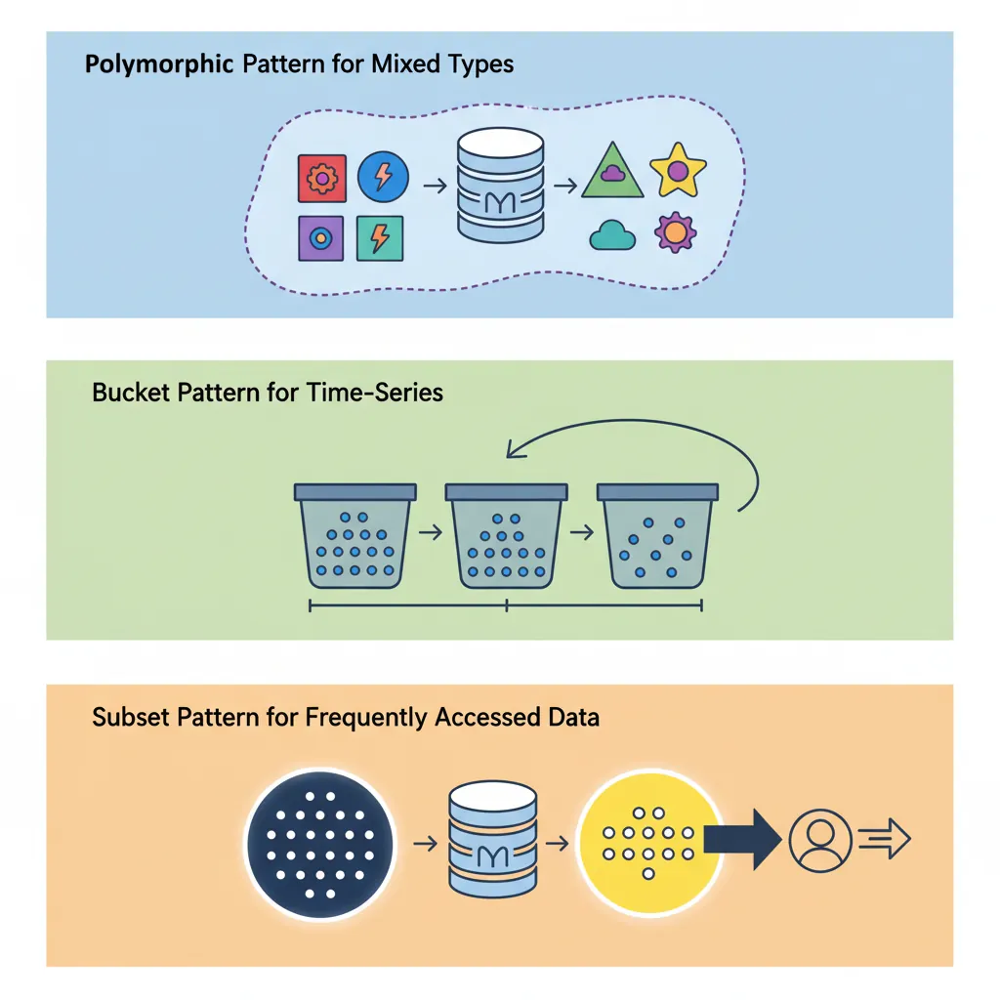

Introduction: NoSQL vs SQL Tradeoffs
MongoDB is the world's most popular document database. Unlike relational databases with rigid schemas, MongoDB stores data as flexible JSON-like documents—perfect for rapidly evolving applications.
Database Mastery
Part 1: SQL Fundamentals & Syntax
Database basics, CRUD operations, joins, constraintsAdvanced SQL & Query Mastery
CTEs, window functions, stored proceduresPostgreSQL Deep Dive
Advanced types, indexing, extensions, tuningMySQL & MariaDB
Storage engines, replication, optimizationTransactions & Concurrency
ACID, isolation levels, locking, MVCCQuery Optimization & Indexing
EXPLAIN plans, index design, performanceData Modeling & Normalization
ERDs, normal forms, schema designMongoDB & Document Databases
NoSQL, aggregation, shardingRedis & Caching Strategies
Data structures, caching patterns, pub/subDatabase Administration & Migrations
Backup, versioning, maintenanceScaling & Distributed Systems
Replication, sharding, CAP theoremCloud Databases & Managed Services
AWS, Azure, GCP database offeringsDatabase Security & Governance
Encryption, access control, complianceData Warehousing & Analytics
OLAP, star schemas, columnar DBsCapstone Projects
Portfolio-ready database implementationsWelcome to the Document Database Era
For decades, relational databases ruled the world. Tables, rows, joins, ACID transactions—the relational model worked beautifully for structured data. But as applications evolved, developers faced new challenges:
- JSON objects from APIs don't fit neatly into tables
- Rapidly changing schemas slow development velocity
- Horizontal scaling requires complex sharding logic
- Object-relational impedance mismatch creates boilerplate code
MongoDB emerged in 2009 as a solution. Instead of tables and rows, MongoDB stores documents—flexible JSON-like objects that map directly to your application's data structures. No more ORMs, no more migrations, no more JOIN headaches.
NoSQL vs. SQL: Different Tools for Different Jobs
When to Choose MongoDB
Choose MongoDB when:
- Data structure changes frequently (rapid feature development)
- Storing hierarchical or nested data (user profiles, catalogs, content management)
- Need horizontal scaling across many servers
- Working with JSON APIs and JavaScript/Node.js ecosystem
- Read-heavy workloads with flexible querying
Choose SQL when:
- Need complex multi-table JOINs and transactional integrity
- Data has strong relationships (e.g., financial systems, inventory)
- Schema is stable and well-defined
- Require ACID guarantees across multiple entities
- Team expertise is primarily SQL-based
The Document Model
In MongoDB, data is stored as documents—self-contained units that combine related data in a single record. Think of documents as rows in SQL, but with superpowers.

Document Fundamentals
// A MongoDB document (JSON format)
{
"_id": ObjectId("507f1f77bcf86cd799439011"),
"username": "alice_dev",
"email": "alice@example.com",
"profile": {
"firstName": "Alice",
"lastName": "Chen",
"age": 28,
"location": "San Francisco, CA"
},
"interests": ["databases", "distributed systems", "coffee"],
"accountCreated": ISODate("2025-01-15T10:30:00Z"),
"lastLogin": ISODate("2026-01-30T14:22:15Z"),
"settings": {
"notifications": true,
"theme": "dark",
"language": "en"
}
}
_id field (auto-generated if not provided). It's the primary key, indexed automatically. ObjectId is a 12-byte identifier that includes timestamp, making it globally unique across servers.
BSON: Binary JSON
MongoDB stores documents in BSON (Binary JSON)—a binary representation that extends JSON with additional types like Date, ObjectId, Binary, Decimal128, and more.
// BSON supports types JSON doesn't
{
"price": NumberDecimal("19.99"), // Precise decimal (not float)
"createdAt": new Date(), // Native date type
"profilePic": BinData(0, "base64..."), // Binary data
"count": NumberLong("9223372036854775807") // 64-bit integer
}
Embedded Documents: Power of Nesting
Unlike SQL's normalized tables, MongoDB encourages embedding related data within a single document. This eliminates joins and improves read performance.
// SQL approach: 3 tables (users, addresses, orders)
// MongoDB approach: 1 document with embedded data
{
"_id": ObjectId("..."),
"username": "bob_buyer",
"addresses": [
{
"type": "shipping",
"street": "123 Main St",
"city": "Austin",
"state": "TX",
"zip": "78701"
},
{
"type": "billing",
"street": "456 Oak Ave",
"city": "Austin",
"state": "TX",
"zip": "78702"
}
],
"recentOrders": [
{
"orderId": "ORD-2025-1234",
"total": 149.99,
"date": ISODate("2026-01-28T10:00:00Z"),
"items": [
{ "productId": "p-001", "name": "Wireless Mouse", "qty": 2, "price": 29.99 },
{ "productId": "p-042", "name": "USB-C Cable", "qty": 3, "price": 12.99 }
]
}
]
}
Embed vs. Reference Decision
Embed when:
- Data is accessed together (one-to-few relationship)
- Child data doesn't change frequently
- Document size stays under 16 MB limit
Reference when:
- Data is large or changes independently
- Many-to-many relationships
- Need to query child data separately
Example: Embed shipping addresses (few, queried with user), reference product catalog (large, shared across users).
Collections & Basic Operations
Documents are organized into collections—analogous to SQL tables, but without enforced schema. A collection can contain documents with completely different structures (though keeping them similar helps maintainability).
// MongoDB Shell (mongosh) or Node.js driver
// Insert a single document
db.users.insertOne({
username: "charlie",
email: "charlie@example.com",
age: 35
});
// Insert multiple documents
db.users.insertMany([
{ username: "diana", email: "diana@example.com", age: 29 },
{ username: "eve", email: "eve@example.com", age: 42 }
]);
// Find documents
db.users.find({ age: { $gte: 30 } }); // age >= 30
db.users.findOne({ username: "alice" });
// Update documents
db.users.updateOne(
{ username: "bob" },
{ $set: { age: 31, "profile.city": "Seattle" } }
);
// Upsert: update if exists, insert if doesn't
db.users.updateOne(
{ username: "frank" },
{ $set: { email: "frank@example.com", age: 27 } },
{ upsert: true }
);
// Delete documents
db.users.deleteOne({ username: "eve" });
db.users.deleteMany({ age: { $lt: 18 } }); // Delete all under 18
Query Operators
// Comparison operators
db.products.find({ price: { $gt: 50, $lte: 200 } }); // 50 < price <= 200
db.products.find({ category: { $in: ["electronics", "books"] } });
// Logical operators
db.products.find({
$or: [
{ price: { $lt: 20 } },
{ onSale: true }
]
});
// Array operators
db.users.find({ interests: "databases" }); // Array contains "databases"
db.users.find({ interests: { $all: ["databases", "coffee"] } }); // Contains both
// Nested field queries
db.users.find({ "profile.city": "Austin" });
db.users.find({ "addresses.type": "billing" });
// Existence checks
db.users.find({ phoneNumber: { $exists: true } });
db.users.find({ salary: { $type: "number" } });
Indexing: From Seconds to Milliseconds
Without indexes, MongoDB scans every document (collection scan) to find matches—slow for large collections. Indexes create sorted data structures for fast lookups.
// Create single-field index
db.users.createIndex({ email: 1 }); // 1 = ascending, -1 = descending
// Compound index (multiple fields)
db.orders.createIndex({ userId: 1, orderDate: -1 });
// Unique index (enforces uniqueness)
db.users.createIndex({ email: 1 }, { unique: true });
// Text index for full-text search
db.articles.createIndex({ title: "text", content: "text" });
db.articles.find({ $text: { $search: "mongodb tutorial" } });
// Geospatial index for location queries
db.stores.createIndex({ location: "2dsphere" });
db.stores.find({
location: {
$near: {
$geometry: { type: "Point", coordinates: [-122.4194, 37.7749] },
$maxDistance: 5000 // 5 km radius
}
}
});
// Partial index (index subset of documents)
db.orders.createIndex(
{ orderDate: 1 },
{ partialFilterExpression: { status: "active" } }
);
Index Performance Impact
Before index: Query 10M documents → ~8 seconds (collection scan)
After index: Same query → ~15 milliseconds (B-tree lookup)
Trade-off: Indexes speed reads but slow writes (each insert/update must update indexes). Balance with your read/write ratio.
explain() to analyze query plans. Avoid over-indexing (each index uses memory and slows writes). Compound indexes can satisfy multiple query patterns.
// Analyze query performance with explain()
db.users.find({ age: { $gte: 30 } }).explain("executionStats");
// Output shows:
// - "executionTimeMillis": 5
// - "totalDocsExamined": 12500 // Without index: millions
// - "indexName": "age_1" // Which index was used
Aggregation Pipeline: MongoDB's Superpower
The aggregation pipeline is MongoDB's framework for data processing. Pass documents through a sequence of stages, each transforming the data—similar to UNIX pipes or SQL's window functions.
Pipeline Stages
// Aggregation pipeline example: Sales report by category
db.orders.aggregate([
// Stage 1: Filter to 2026 orders only
{ $match: {
orderDate: {
$gte: ISODate("2026-01-01"),
$lt: ISODate("2027-01-01")
}
}},
// Stage 2: Unwind items array (one doc per item)
{ $unwind: "$items" },
// Stage 3: Lookup product details (like SQL JOIN)
{ $lookup: {
from: "products",
localField: "items.productId",
foreignField: "_id",
as: "productInfo"
}},
// Stage 4: Group by category, sum revenue
{ $group: {
_id: "$productInfo.category",
totalRevenue: { $sum: { $multiply: ["$items.qty", "$items.price"] } },
orderCount: { $sum: 1 },
avgOrderValue: { $avg: { $multiply: ["$items.qty", "$items.price"] } }
}},
// Stage 5: Sort by revenue descending
{ $sort: { totalRevenue: -1 } },
// Stage 6: Limit to top 10 categories
{ $limit: 10 },
// Stage 7: Format output
{ $project: {
_id: 0,
category: "$_id",
revenue: { $round: ["$totalRevenue", 2] },
orders: "$orderCount",
avgValue: { $round: ["$avgOrderValue", 2] }
}}
]);
Common Aggregation Operators
Aggregation Operators Cheat Sheet
Filtering:
$match- Filter documents (like SQL WHERE)$limit- Limit result count$skip- Skip N documents (pagination)
Grouping:
$group- Group by field(s), aggregate values$count- Count documents$facet- Multiple sub-pipelines in parallel
Transformation:
$project- Include/exclude fields, compute new fields$addFields- Add fields without dropping others$unwind- Deconstruct arrays into separate documents
Joining:
$lookup- Left outer join with another collection$graphLookup- Recursive lookup (graph traversal)
Sorting:
$sort- Order results$sortByCount- Group and sort by count in one stage
// Real-world example: User engagement report
db.events.aggregate([
// Users active in last 30 days
{ $match: {
timestamp: { $gte: new Date(Date.now() - 30*24*60*60*1000) }
}},
// Group by user, count actions
{ $group: {
_id: "$userId",
totalEvents: { $sum: 1 },
lastSeen: { $max: "$timestamp" },
eventTypes: { $addToSet: "$eventType" } // Unique event types
}},
// Calculate engagement score
{ $addFields: {
engagementScore: {
$multiply: [
"$totalEvents",
{ $size: "$eventTypes" } // Variety bonus
]
}
}},
// Top 100 most engaged users
{ $sort: { engagementScore: -1 } },
{ $limit: 100 }
]);
Scaling MongoDB: Replica Sets & Sharding
MongoDB is designed for horizontal scaling. As data grows, add more servers instead of upgrading hardware.

Replica Sets: High Availability
A replica set is a group of MongoDB servers that maintain the same dataset. If the primary fails, an automatic election promotes a secondary to primary—no downtime.
// Replica set configuration (3-node cluster)
rs.initiate({
_id: "myReplicaSet",
members: [
{ _id: 0, host: "mongo1.example.com:27017", priority: 2 }, // Primary
{ _id: 1, host: "mongo2.example.com:27017", priority: 1 }, // Secondary
{ _id: 2, host: "mongo3.example.com:27017", arbiterOnly: true } // Arbiter (voting only)
]
});
// Connection string with replica set
mongodb://mongo1.example.com,mongo2.example.com,mongo3.example.com/mydb?replicaSet=myReplicaSet
// Read preference: where to read data
db.users.find().readPref("primaryPreferred"); // Primary first, secondaries if unavailable
db.analytics.find().readPref("secondary"); // Always read from secondaries (reduce primary load)
majority waits for majority of nodes to acknowledge (safe but slower). 1 waits only for primary (fast but riskier). Balance based on importance of data.
Sharding: Horizontal Partitioning
Sharding distributes data across multiple servers (shards). Each shard holds a subset of data, allowing storage and throughput beyond a single server's limits.
# Enable sharding on database
sh.enableSharding("ecommerce")
# Shard a collection by userId (shard key)
sh.shardCollection("ecommerce.orders", { userId: 1 })
# MongoDB automatically routes queries to correct shards
# db.orders.find({ userId: "user123" }) -> Single shard (efficient)
# db.orders.find({ orderDate: {...} }) -> All shards (scatter-gather, slower)
Choosing a Shard Key
Good shard keys:
- High cardinality: Many unique values (userId, productId)
- Even distribution: Avoids hotspots (not
createdAtfor always-increasing timestamps) - Query pattern aligned: Most queries include the shard key
Bad shard keys:
_id- Random ObjectId causes scattered writescountry- Low cardinality (few values), uneven distributioncreatedAt- All writes go to one shard (last time range)
Example Fix: Use compound key { country: 1, userId: 1 } for better distribution while maintaining country-based queries.
Schema Design Patterns
Schema design in MongoDB is about optimizing for your access patterns, not normalization. Here are proven patterns for common scenarios.

1. Polymorphic Pattern
Store documents with different structures in the same collection, distinguished by a type field.
// Products collection with different product types
{
"_id": ObjectId("..."),
"type": "book",
"title": "Database Design",
"author": "C.J. Date",
"isbn": "978-0321884497",
"pages": 865
}
{
"_id": ObjectId("..."),
"type": "electronics",
"name": "Wireless Mouse",
"brand": "Logitech",
"warranty": "2 years",
"batteryType": "AA"
}
// Query by type
db.products.find({ type: "book" })
2. Bucket Pattern
Group time-series data into buckets to reduce document count and improve performance.
// Instead of one document per sensor reading (millions of documents)
// Group readings into hourly buckets
{
"_id": ObjectId("..."),
"sensorId": "sensor-42",
"date": ISODate("2026-01-30T14:00:00Z"),
"readings": [
{ "timestamp": ISODate("2026-01-30T14:00:05Z"), "temp": 22.5, "humidity": 45 },
{ "timestamp": ISODate("2026-01-30T14:01:05Z"), "temp": 22.7, "humidity": 46 },
// ... 3600 readings in one hour
],
"avgTemp": 23.1,
"maxTemp": 24.5,
"minTemp": 21.8
}
3. Subset Pattern
Store frequently accessed data in the main document, reference full dataset elsewhere.
// Movie document with subset of reviews (most recent 10)
{
"_id": ObjectId("..."),
"title": "The Shawshank Redemption",
"year": 1994,
"recentReviews": [
{ "user": "alice", "rating": 5, "comment": "Masterpiece!", "date": "2026-01-25" },
// ... 9 more recent reviews embedded
],
"totalReviews": 452000, // Count
"avgRating": 4.8,
"reviewsRef": "reviews-collection" // Full reviews in separate collection
}
4. Extended Reference Pattern
Embed frequently accessed fields from referenced documents to avoid lookups.
// Order document with extended product references
{
"_id": ObjectId("..."),
"orderId": "ORD-12345",
"items": [
{
"productId": ObjectId("..."),
// Embedded product fields to avoid lookup
"name": "Wireless Mouse",
"price": 29.99,
"image": "mouse-thumbnail.jpg"
// Full product details in products collection if needed
}
]
}
When MongoDB Wins (and When It Doesn't)
MongoDB Excels At
- Content Management: Articles, blogs, catalogs with varying structures
- User Profiles: Flexible schemas for different user types
- Real-time Analytics: Fast writes, aggregation pipeline for analysis
- Mobile Apps: JSON API compatibility, horizontal scaling
- IoT & Time-Series: High write throughput, bucket pattern
- Catalogs & Inventories: Nested product attributes, full-text search
- Gaming: Player profiles, leaderboards, session data
Choose SQL Instead For
- Financial Transactions: Multi-entity ACID guarantees (bank transfers, payments)
- Complex Joins: Heavy relational queries across many tables
- Reporting & BI: SQL-based tools ecosystem (Tableau, Power BI)
- Strong Schema Enforcement: Strict validation rules via database constraints
- Legacy Integration: Existing SQL-based architecture
Real-World Success Stories
- eBay: Manages 250+ billion records across hundreds of MongoDB clusters for search, catalog, and user data
- Uber: Stores trip data, driver locations, and real-time analytics in MongoDB for millisecond query latency
- Adobe: Powers Adobe Experience Manager with MongoDB, handling billions of content assets
- Bosch: IoT sensor data from 8 billion devices processed through MongoDB
Stick with SQL When
- Complex transactions: Multi-document ACID is newer in MongoDB
- Complex joins: $lookup is slower than SQL JOINs
- Strict data integrity: Need enforced foreign keys
- Reporting/BI: SQL tools have better SQL support
- Small scale: Single-server relational is simpler